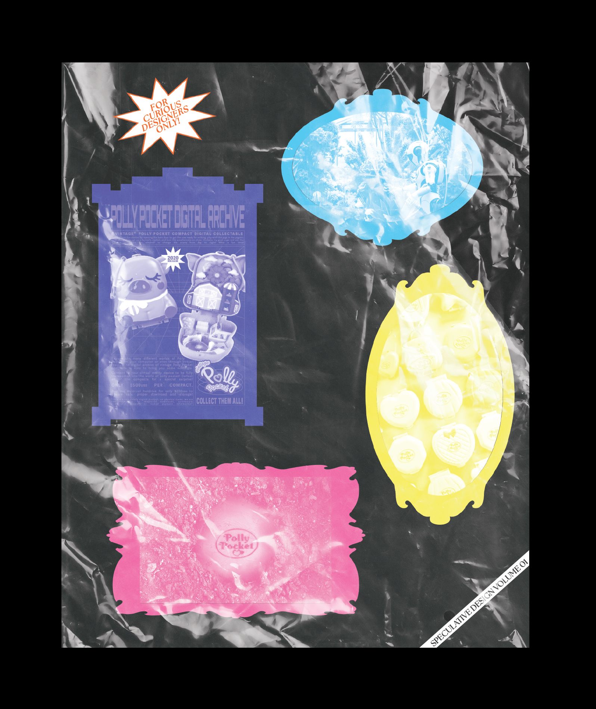
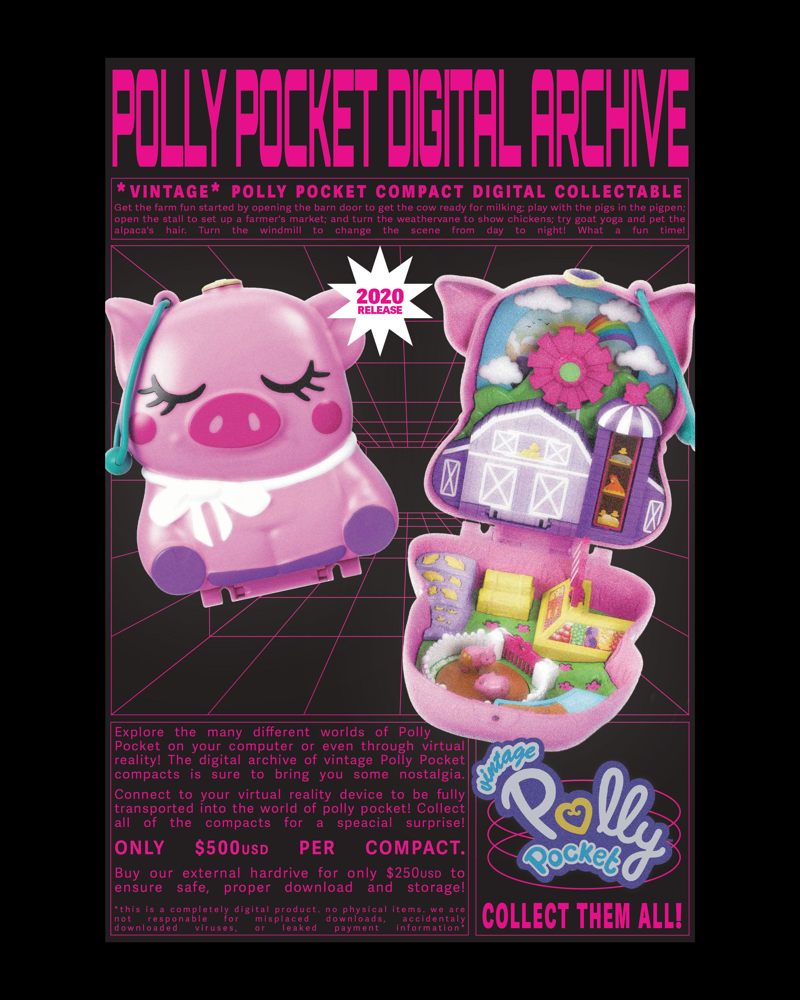

Speculative Design Book
This project is a 500-page speculative design book that archives Polly Pocket compacts while imagining their future. The publication documents existing designs and explores how these miniature worlds could evolve through new materials, technologies, and forms of play.

Concept
This project explores the idea of archiving and reimagining a familiar toy through speculative design. Polly Pocket compacts are small, self-contained worlds that many people recognize and remember. By documenting a wide range of existing compacts, the book functions as an archive that preserves the visual language, themes, and design patterns that define the toy.
The project then shifts toward speculation by imagining how Polly Pocket compacts might evolve in the future. Through design proposals and visual exploration, the book considers how changes in materials, technology, and play could transform these miniature worlds. The goal was to treat the compact not only as a nostalgic object, but as a platform for imagining new forms of interaction, storytelling, and design.
process
The project began with the design of a poster that explored the visual language of Polly Pocket compacts. This initial piece helped establish the tone, color relationships, and graphic elements that would later expand into a larger system.
From this starting point, the project developed into a 500-page publication that documents and archives a wide range of Polly Pocket compacts. Through research, cataloging, and editorial design, each compact was collected and organized into a structured visual archive highlighting their forms, themes, and design details.
The layout was designed to balance clarity and scale, allowing the book to function both as a visual catalog of existing compacts and as a speculative exploration of the toy’s future. By documenting these miniature worlds in a single publication, the project reimagines Polly Pocket not only as a nostalgic object but also as a platform for design speculation and storytelling.

Results
The final result is a 500-page publication that combines archival documentation with speculative design thinking. By presenting Polly Pocket compacts as both historical artifacts and future design opportunities, the project explores how familiar objects can be reinterpreted through design research and storytelling.
Flip Through the Book
View the full publication below.